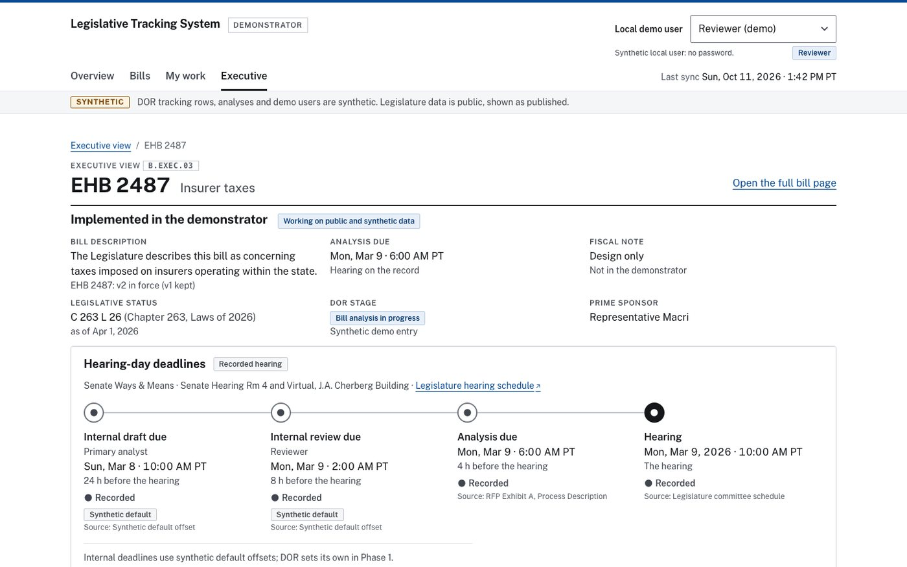
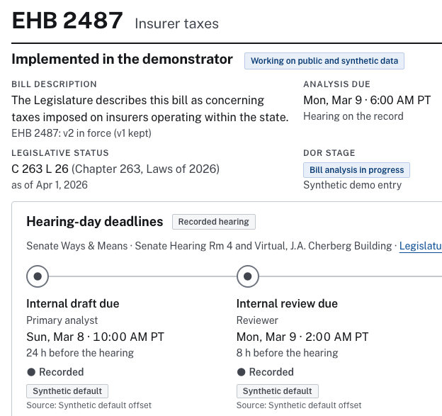
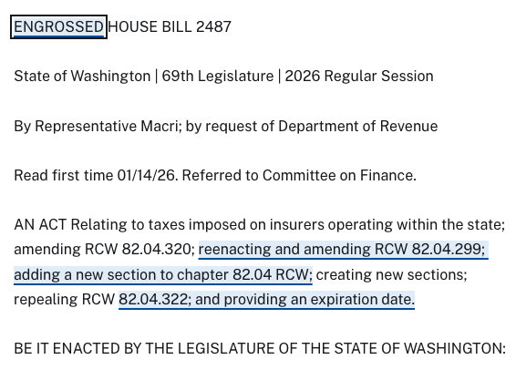

Legislative Tracking System
Built for the Washington State Department of Revenue’s solicitation, on public legislative data; not deployed. It gives agency executives one view of each bill: status, analysis stage, analysis due date and the deadlines before its committee hearing, each deadline marked with its source. It also compares versions of a bill and underlines the text a later version adds.
- Uses the Legislature’s public record of 3,762 bills, 31,534 actions and 21,947 documents; agency tracking data is synthetic.
- Zero violations on automated WCAG 2.2 AA accessibility checks.


